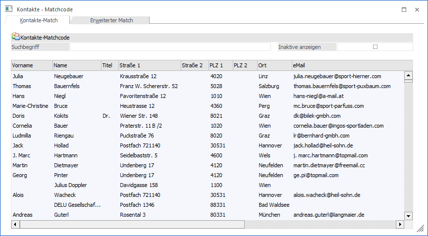
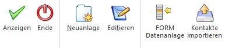

Wenn der Fokus in dem Feld "Kontaktnummer" liegt und das Lupen-Symbol bzw. die Taste F9 gedrückt wird, dann öffnet sich das Programm "Kontakte - Matchcode". An dieser Stelle kann gezielt nach Kontakten gesucht werden.
Hinweis
Wenn in dem Feld "Kontaktnummer" ein Teil der gesuchten Nummer oder des Namens eingetragen wurde und die Taste F9 gedrückt wird, dann wird diese Eingabe als Suchbegriff übernommen und die Suche direkt gestartet.
Grundsätzlich unterteilt sich der Matchcode in die folgenden Register, wobei immer der Matchcode in dem zuletzt verwendeten Register aufgerufen wird:
ü Kontakte-Match (aktuelles
Register)
In diesem Register kann durch Eingabe eines Suchbegriffs innerhalb
aller angezeigten Spalten des Matches gesucht werden.
ü Erweiterter
Kontakte-Matchcode
In diesem Register kann aufgrund einer zuvor angelegten
Suchstrategie nach Kontakten gesucht werden. Die Spalten in der
Suchergebnistabelle werden dabei ebenfalls über die Suchstrategie definiert.
Hinweis
Die unterschiedlichen Suchstrategien werden in dem Programm "Vorlagen Anlage" (WinLine START - Vorlagen - Vorlagen Anlage - Stammdaten Kontakte - Vorlage als "Suchstrategie") definiert.
Register "Kontakte-Match"

Ø Suchbegriff
Durch Eingabe und Bestätigung eines Suchbegriffs wird innerhalb aller angezeigten Spalten des Matches gesucht und die Suchergebnistabelle entsprechend aufgebaut.
Anschließend kann der gewünschte Datensatz mit einem Doppelklick in das Feld "Kontaktnummer" übernommen werden.
Hinweis
Wird nur ein Datensatz gemäß dem Suchbegriff gefunden, wird dieser automatisch in das Ausgangsfeld übernommen.
Ø Inaktive anzeigen
Mittels der Option "inaktive anzeigen" können auch Kontakte angezeigt werden, welche im Kontaktestamm bereits mit diesem Kennzeichen versehen wurden.
Buttons

Ø OK
Durch Anwahl des Buttons "OK" bzw. der Taste F5 wird die Kontaktsuche gestartet.
Ø Ende
Durch Anwahl des Buttons "Ende" bzw. der Taste ESC wird der Programmbereich "Kontakte - Matchcode" geschlossen.
Ø Neuanlage
Mit Hilfe des Buttons "Neuanlage" kann ein neuer Kontakt angelegt werden.
Ø Editieren
Durch Anwahl des Buttons "Editieren" kann der ausgewählte Kontakt editiert werden.
Ø FORM Datenanlage
Die "FORM Datenanlage" bietet die Möglichkeit Datensätze in der WinLine vorzuhalten und bei Bedarf in die WinLine Stammdaten zu übernehmen (nähere Informationen entnehmen Sie bitte dem Kapitel "FORM Datenanlage").
Ø Kontakte importieren
Mit Hilfe dieses Buttons können Kontakte schnell und effizient aus externen Quellen übernommen werden (weitere Informationen entnehmen Sie bitte dem Kapitel "Stammdaten importieren").